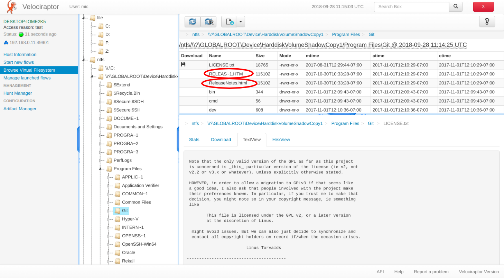

Velorciraptor’s filesystem’s accessors
The latest release of Velociraptor introduces the ability to access raw NTFS volumes, allowing users to read files which are normally locked by the operating system such as registry hives, pagefile and other locked files. In addition, Velociraptor can now also read Volume Shadow Copy snapshots. The gives a kind of time-machine ability to allow the investigator to look through the drive content at a previous point in the past.
This blog post introduces the new features and describe how Velociraptor’s filesystem accessors work to provide data from multiple sources to VQL queries.
We have previously seen that Velociraptor can list and download files from the client’s filesystem, as well as registry keys and values. The client’s filesystem is made available to VQL plugins such as glob() allowing many Artifacts to be written that work on files, registry keys and raw NTFS volumes.
While Velociraptor is a great remote response tool, everything that it can do remotely, it can also do locally using a command line interface. This gives the user an opportunity to interactively test their VQL queries while writing artifacts.
The latest release adds a couple of convenient command line options which allow the user to interact with the filesystem accessors. For example, to list the files in a directory we can use the “velociraptor fs ls” command:
F:\>velociraptor.exe fs ls
+------+------+------------+---------------------------+---------------------------------+
| Name | Size | Mode | mtime | Data |
+------+------+------------+---------------------------+---------------------------------+
| C: | 0 | d--------- | 1969-12-31T16:00:00-08:00 | Description: Local Fixed Disk |
| | | | | DeviceID: C: |
| | | | | FreeSpace: 12686422016 |
| | | | | Size: 33833349120 |
| | | | | SystemName: DESKTOP-IOME2K5 |
| | | | | VolumeName: |
| | | | | VolumeSerialNumber: 9459F443 |
| D: | 0 | d--------- | 1969-12-31T16:00:00-08:00 | Description: CD-ROM Disc |
| | | | | DeviceID: D: |
| | | | | FreeSpace: 0 |
| | | | | Size: 57970688 |
| | | | | SystemName: DESKTOP-IOME2K5 |
| | | | | VolumeName: VBox_GAs_5.2.11 |
| | | | | VolumeSerialNumber: A993F576 |
+------+------+------------+---------------------------+---------------------------------+
SELECT Name, Size, Mode.String AS Mode, timestamp(epoch=Mtime.Sec) AS mtime,
Data FROM glob(globs=path, accessor=accessor)
The “fs ls” command instructs Velociraptor to list directories using its internal filesystem accessors. By default it will use the “file” accessor - which simply uses the usual Win32 api filesystem calls (i.e. CreateFile, FindFirstFile etc).
On windows, the file accessor lists the drive letters at the root of the filesystem, then allows subdirectories to be listed under each letter. The above output shows some metadata for each drive letter (like its size etc) and below the table we can see the VQL query that was used to generate the table. To be clear, the “fs ls” command is simply a shortcut for producing a VQL query that ultimately uses the filesystem accessor in the glob() VQL plugin. Therefore, we can enter any glob expression to find files:
F:\>velociraptor.exe fs ls -v "c:\program files\**\*.exe"
+--------------------------------+----------+------------+---------------------------+------+
| FullPath | Size | Mode | mtime | Data |
+--------------------------------+----------+------------+---------------------------+------+
| C:\Program Files\Windows Defen | 4737448 | -rw-rw-rw- | 2018-07-14T17:56:49-07:00 | |
| der Advanced Threat Protection | | | | |
| \MsSense.exe | | | | |
| C:\Program Files\Windows Defen | 791384 | -rw-rw-rw- | 2018-07-14T17:56:43-07:00 | |
| der Advanced Threat Protection | | | | |
| \SenseCncProxy.exe | | | | |
| C:\Program Files\Windows Defen | 3832016 | -rw-rw-rw- | 2018-07-14T17:56:50-07:00 | |
| der Advanced Threat Protection | | | | |
| \SenseIR.exe | | | | |
| C:\Program Files\Windows Defen | 2147192 | -rw-rw-rw- | 2018-07-14T18:05:00-07:00 | |
| der Advanced Threat Protection | | | | |
| \SenseSampleUploader.exe | | | | |
........
+--------------------------------+----------+------------+---------------------------+------+
SELECT FullPath, Size, Mode.String AS Mode, timestamp(epoch=Mtime.Sec) AS mtime, Data FROM
glob(globs=path, accessor=accessor)
When using the registry filesystem accessor, the registry appears like a filesystem, allowing us to run glob expressions against registry keys and values (Note that the registry accessor provides the value in the metadata):
F:\>velociraptor.exe fs --accessor reg ls "HKEY_USERS\*\Software\Microsoft\Windows\CurrentVersion\{Run,RunOnce}\*"
+---------------+------+------------+---------------------------+---------------------------------+
| Name | Size | Mode | mtime | Data |
+---------------+------+------------+---------------------------+---------------------------------+
| OneDriveSetup | 104 | -rwxr-xr-x | 2018-09-03T02:48:53-07:00 | type: SZ |
| | | | | value: C:\Windows\SysWOW64\ |
| | | | | OneDriveSetup.exe /thfirstsetup |
| OneDriveSetup | 104 | -rwxr-xr-x | 2018-09-03T02:48:47-07:00 | type: SZ |
| | | | | value: C:\Windows\SysWOW64\ |
| | | | | OneDriveSetup.exe /thfirstsetup |
+---------------+------+------------+---------------------------+---------------------------------+
SELECT Name, Size, Mode.String AS Mode, timestamp(epoch=Mtime.Sec) AS mtime,
Data FROM glob(globs=path, accessor=accessor)
Finally, the NTFS accessor can access files by parsing the NTFS filesystem directly. At the top level, the accessor shows all NTFS formatted partitions. These include regular drives as well as Volume Shadow Copies:
F:\>velociraptor.exe fs --accessor ntfs ls
+--------------------------------+------+------------+---------------------------------------------------------+
| Name | Size | Mode | Data |
+--------------------------------+------+------------+---------------------------------------------------------+
| \\.\C: | 0 | d--------- | Description: Local Fixed Disk |
| | | | DeviceID: C: |
| | | | FreeSpace: 11802157056 |
| | | | Size: 33833349120 |
| | | | SystemName: DESKTOP-IOME2K5 |
| | | | VolumeName: |
| | | | VolumeSerialNumber: 9459F443 |
| \\?\GLOBALROOT\Device\Harddisk | 0 | d--------- | DeviceObject: \\?\GLOBALROOT\Device\ |
| | | | HarddiskVolumeShadowCopy1 |
| VolumeShadowCopy1 | | | ID: {CAF25144-8B70-4F9E-B4A9-5CC702281FA1} |
| | | | InstallDate: 20180926154712.490617-420 |
| | | | OriginatingMachine: DESKTOP-IOME2K5 |
| | | | VolumeName: \\?\Volume{3dc4b590-0000-000-501f00000000}\ |
| \\?\GLOBALROOT\Device\Harddisk | 0 | d--------- | DeviceObject: \\?\GLOBALROOT\Device\ |
| | | | HarddiskVolumeShadowCopy2 |
| VolumeShadowCopy2 | | | ID: {E48BFDD7-7D1D-40AE-918C-36FCBB009941} |
| | | | InstallDate: 20180927174025.893104-420 |
| | | | OriginatingMachine: DESKTOP-IOME2K5 |
| | | | VolumeName: \\?\Volume{3dc4b590-0000-000-501f00000000}\ |
+--------------------------------+------+------------+---------------------------------------------------------+
SELECT Name, Size, Mode.String AS Mode, timestamp(epoch=Mtime.Sec) AS mtime,, Data FROM glob(globs=path, accessor=accessor) WHERE Sys.name_type != 'DOS'
The above example shows two volume shadow copies that Windows has takens on two different dates (highlighted above). We can browse these snapshots just like they were another drive (We can also apply any glob expressions to this path):
F:\>velociraptor.exe fs --accessor ntfs ls "\\?\GLOBALROOT\Device\HarddiskVolumeShadowCopy1\
Users\test\*.exe"
+------------------+----------+------------+---------------------------+------------------+
| Name | Size | Mode | mtime | Data |
+------------------+----------+------------+---------------------------+------------------+
| velociraptor.exe | 12521472 | -rwxr-xr-x | 2018-08-19T23:37:01-07:00 | mft: 39504-128-0 |
| | | | | name_type: Win32 |
| winpmem.exe | 3619260 | -rwxr-xr-x | 2017-12-28T21:17:50-08:00 | mft: 39063-128-1 |
| | | | | name_type: POSIX |
+------------------+----------+------------+---------------------------+------------------+
SELECT Name, Size, Mode.String AS Mode, timestamp(epoch=Mtime.Sec) AS mtime, Data FROM
glob(globs=path, accessor=accessor) WHERE Sys.name_type != 'DOS'
Volume shadow copies are like a time machine - they can reveal data that was stored on the drive days or weeks prior to the time we inspected it which makes them very useful for some investigations.
Using filesystem accessors remotely - The Velociraptor VFS
The above description shows how Velociraptor’s command line interface can be used to interact with the various filesystem accessors. This is important for writing and collecting artifacts for triage and general system state exploration.
However, how do filesystem accessors appear in the Velociraptor GUI?

The nice thing about Velociraptor’s GUI is that it is just a way to present the same information that the “fs ls” command is getting by using the same VQL queries. Therefore the view is very familiar:
- The top level of the Velociraptor VFS represents all the filesystem accessors implemented in the client.
- Each of these accessors shows its own view:
- The file accessor uses the OS APIs to list files and directories. Its top level is a list of mounted drives (which may be CDROM’s or even network shares).
- The NTFS accessor shows all NTFS volumes accessible, including local drives and Volume Shadow Copies.
- The registry accessor uses Win32 APIs to access the registry and shows at the top level a list of all system hives currently attached.
- For each file listed, the accessor also includes a Data attribute. This contains accessor specific metadata about the file (for example the MFT entry).
In the below screenshot we can see how the user may navigate into the Volume Shadow Copy and retrieve files from it:
A note about filenames.
NTFS can have several different names to the same file. Typically, a short DOS 8.3 style filename (e.g. PROGRA~1), as well as a Win32 long filename (e.g. Program Files). You can see the short name for a file using the API GetShortPathName() (or the command dir /x), but a program needs to deliberately ask for it. Most programs do not explicitly collect or show the short filename of a file.
This can cause problems for DFIR applications. For example, Imagine we discovered a Run key to C:\Users\test\runme.exe. If we only considered the long filename (as for example returned by the Win32API FindFile() or the output of the dir command), then we would assume the file has been removed and the run key is not active. In reality however, the file may be called “This is some long filename.exe” with a DOS name of “runme.exe”. Explorer (and most tools) will only show the long filename by default, but the runkey will still execute by referring to the DOS filename!
Usually the short filename is some variation of the long filename with a ~1 or ~2 at the end. In reality it can be anything. In the snippet below, I am setting the short filename for the velociraptor.exe binary to be something completely unrelated, then I am running the binary using the unrelated filename:
C:\Users\test>fsutil file setshortname velociraptor.exe runme.exe
C:\Users\test>dir /x *.exe
Volume in drive C has no label.
Volume Serial Number is 9459-F443
Directory of C:\Users\test
08/19/2018 11:37 PM 12,521,472 RUNME.EXE velociraptor.exe
2 File(s) 16,140,732 bytes
0 Dir(s) 11,783,704,576 bytes free
C:\Users\test>runme.exe -h
usage: velociraptor [<flags>] <command> [<args> ...]
An advanced incident response and monitoring agent.
You can see that Windows explorer shows no trace of the runme.exe file since it only displays the Win32 long file name:
It is important for DFIR investigators to be aware of this and test your tools! You can see that sysinternals’ autoruns program won’t have any of these shenanigans when I added a runkey to “runme.exe”. It shows the real filename velociraptor.exe even though the runkey indicates runme.exe:

Velocirpator treats a file’s DOS name and Win32 Name as distinct entries in the NTFS directory listing. This allows us to find any references to the file by it’s DOS name as well as its Win32 name.
Conclusions
As Velociraptor gains more functionality, we envision more filesystem accessors to become available. The nice thing about these accessors is that they just slot in to the rest of the VQL plugins. By providing a new accessor, we are able to glob, hash, yara scan etc the new abstraction. For example, to yara scan a registry key one simply calls the VQL plugin yara with an accessor of reg: yara(rules=myRules, files=my_reg_keys, accessor=”reg”)